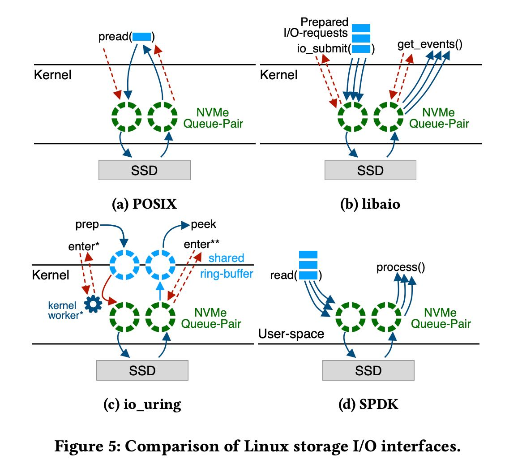
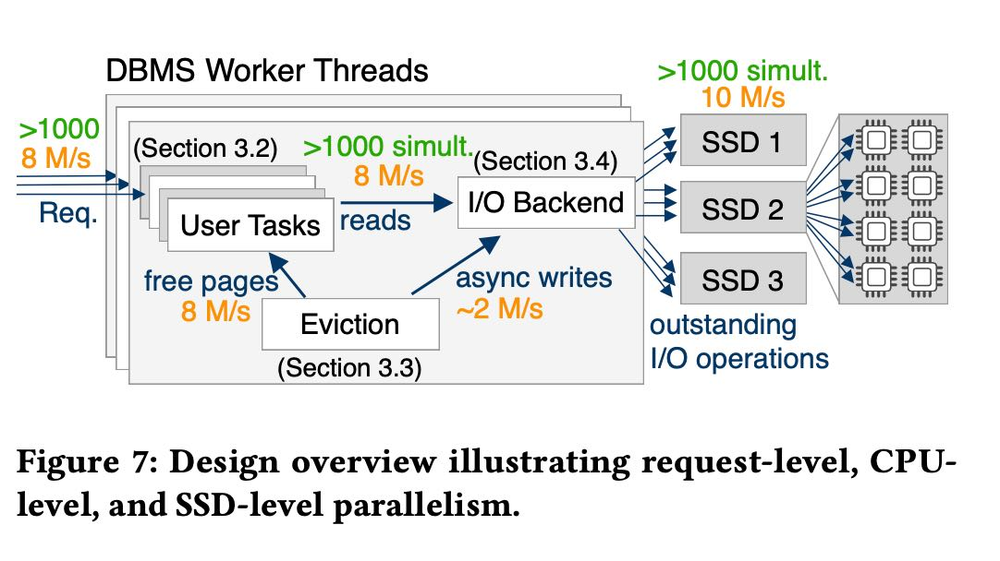
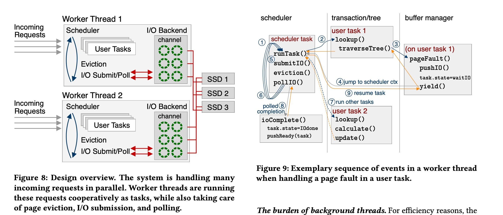
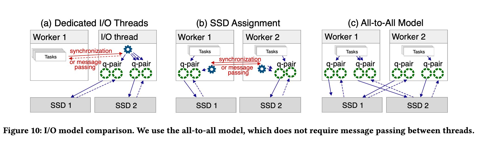

What Modern NVMe Storage Can Do, And How To Exploit It
vldb2023. 文章讨论如何设计OLTP可以充分利用nvme ssd array. 按照文章里面给出的配置，一个机器上可以挂8个nvme ssd, 然后每个ssd可以达到1MIOPS, 总量大约是12.5M IOPS. 在这样的SSD阵列下面充分利用IO，需要做哪些事情以及应该如何设计系统，并且回答下面这几个问题：
[!NOTE] Our high-level goal of closing this performance gap can be broken down into the following research questions:
- Q1: Can arrays of NVMe SSDs achieve the performance promised in the hardware specifications?
- Q2: Which I/O API(pread/pwrite,libaio,io_uring)should be used? Is it necessary to rely on kernel-bypassing (SPDK)?
- Q3: Which page size should storage engines use to get good performance while minimizing I/O amplification?
- Q4: How to manage the parallelism required for high SSD throughput?
- Q5: How to make a storage engine fast enough to be able to manage tens of millions of IOPS?
- Q6: Should I/O be performed by dedicated I/O threads or by each worker thread?
文章最开始做了几组测试大概有这么几个数据：
- read/write mix情况下，如果write大约是10%的时候，那么IOPS依然可以在10M左右。
- page size = 4KB对于read/write依然是最有利的，IOPS和延迟在在一定程度上最优化。
- concurrent io requests 大约需要在1000个才可以跑满IOPS. 也就是说如果要pread/pwrite需要1000个线程。
- 如果pread/pwrite不行的话，那么就需要使用libaio, io_uring, SPDK(kernel-bypassing).
- cpu cycles count. 如果按照12M IOPS计算的话，那么每个IO操作只能使用 (2.5Ghz x 64 cores /12M) = 13k cycles.
- 如果cpu cycles count的话，那么依赖kernel来做context switch就不行，需要lightweight tasks. 这里他们用的是boost context而不是C++ coroutine.

所以最后设计出来的结构依然是开辟固定数量的worker thread, 然后worker thread内部来进行cooperative调度，IO请求需要依赖于libaio/io_uring/SPDK.
[!NOTE]
Lightweight tasks. To avoid oversubscription, we use lightweight cooperative threads that are managed by the database system in user-space. This reduces the context switching overhead and allows the system to be fully in control of scheduling without kernel inter- ference. In this design, which is illustrated in Figure 8, the system starts as many worker threads as there are hardware cores avail- able in the system. Each of these workers runs a DBMS-internal scheduler that executes these lightweight threads, which we call tasks. To implement user-space task switching, we use the Boost context library [22], specifically fcontext. Thereby, a task switch costs only around ~20 CPU cycles, instead of several thousand for a kernel context switch. This enables cheap and frequent context switches deep in the call stack, and makes it fairly easy to port existing code bases to this new design.
Cooperative multitasking. Conceptually, Boost contexts are non-preemptive user-space threads. Tasks therefore need to yield control periodically back to the scheduler. In our cooperative multitasking design, this happens whenever a user query encounters a page fault, runs out of free pages, or when the user task is completed. Further, to prevent a worker from being stalled due to latching, we modified all latches to eventually yield to the scheduler as well.


在IO访问上还有三种方式：a) dedicated threads(专门的IO线程来做non-blocking IO) b) SSD assignment c) All-to-All. 几个之间的区别如下图. dedicated threads问题是在需要依赖于kernel线程切换cpu cycles多，ssd assignment和all-to-all两者之间差不多的，但是看起来all-to-all简单许多没有sync/message passing.

最开始的几个问题解答如下.
[!NOTE]
- Q1: Arrays of NVMe SSDs can achieve the performance promised in hardware specifications. In fact, we achieved slightly higher throughput at 12.5 M IOPS with our 8×SSD setup.
- Q2: Good performance canbeachievedwithallasynchro- nous I/O interfaces. Kernel-bypassing is not essential to achieve full bandwidth even with small pages. However, it is more efficient in CPU usage.
- Q3:The best trade-off between random IOPS, throughput, latency, and I/O amplification is achieved with 4 KB pages.
- Q4: To manage the high parallelism required for large NVMe SSD arrays, the database system must employ a low overhead mechanism to quickly jump between user queries. To solve that we employed cooperative multitasking using lightweight user-space threads.
- Q5:Managing workloads with tens of million IOPS makes out-of-memory code paths hot and performance critical. This requires scalable I/O management through partition- ing relevant data structures to prevent contention hotspots. The replacement algorithm has to be optimized to evict tens of millions of pages per second
- Q6:I/O should be performed directly by worker threads. In our design worker threads in fact perform all duties, like, in-memory work, eviction, and I/O.This symmetric design has conceptual advantages and allows for a more robust system.